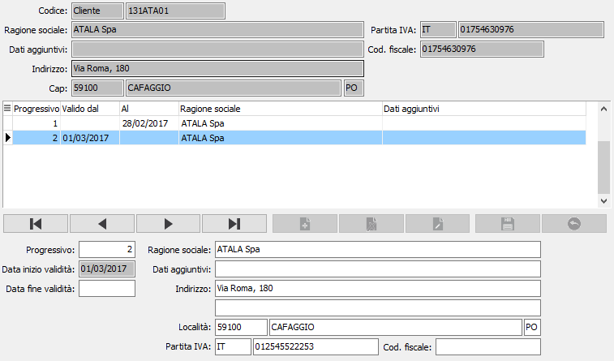

Dati storici anagrafiche
Tramite questa tabella è possibile gestire i dati storici di clienti, fornitori e sottoconti.

Per i clienti e per i fornitori è possibile tenere traccia dei dati "legali", quali la ragione sociale, i dati aggiuntivi, l'indirizzo, il Cap, la città, la provincia, la partita Iva ed il codice fiscale, per data validità e che devono essere riportati nelle stampe fiscali.
Per i sottoconti è possibile tenere traccia dei cambiamenti di descrizione del sottoconto per data validità, al fine di ottenere la giusta descrizione nelle stampe fiscali (Stampa registri Iva, Stampa liquidazione, Stampa giornale di magazzino, Stampa bilancio, Stampa giornale di magazzino).